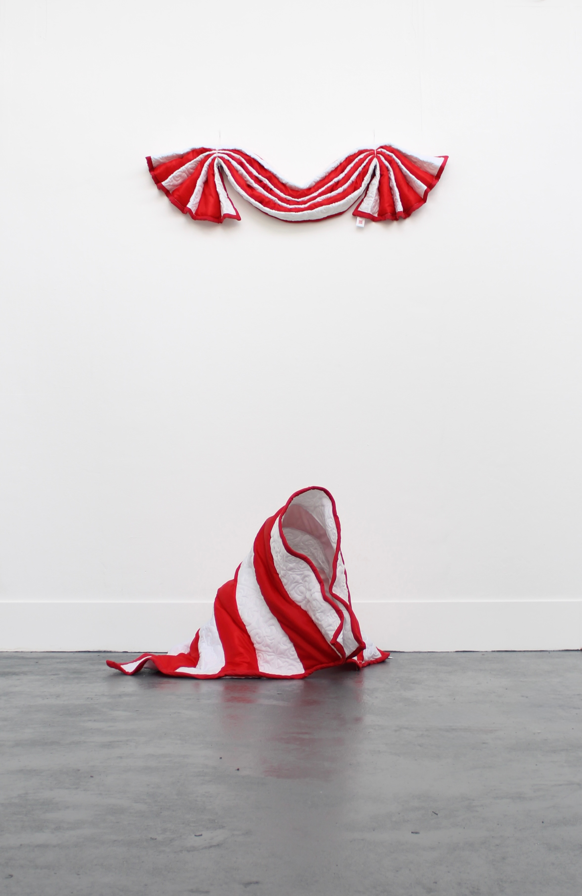
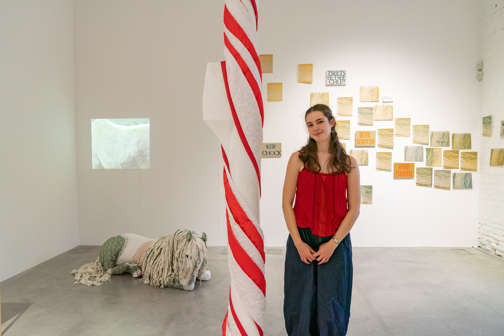

Madeline Drake is a mixed-medium artist who more recently works with textiles and soft sculpture to create detailed installations. Her practice focuses on reworking flags removed by organisations opposing the far-right, and flipping its hateful intentions into things of love and invitation. Disappointed by current affairs, her work acts as a subtle protest, exploring themes of colonisation and British history, allowing audiences to reflect upon their own prejudice within an almost comforting and domestic setting.
